遊びで植物を育てよう
2022/07/05
ブラックベリーの収獲スタートです。
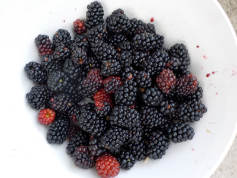
今日はこれだけ収獲出来ました。持って帰って、洗ってジャムにしました。
仕事帰りにやると疲れますね。
【ブラックベリーTOP】
【果物TOP】
【園芸TOP】
2022/05/29
今年はブラックベリーが沢山食べれそうです。
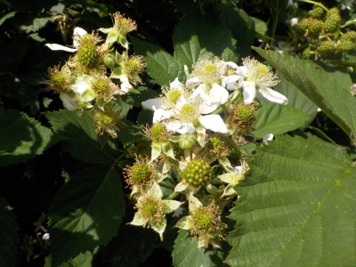
花も多いし実も沢山出来ています。
このまま順調に育ったら、大量に収獲出来そう。
【ブラックベリーTOP】
【果物TOP】
【園芸TOP】
2022/05/05
ブラックベリーの花が咲いていました。
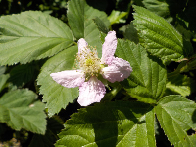
ほとんどはまだツボミですが、これだけ咲いてました。
シワシワだ。
【ブラックベリーTOP】
【果物TOP】
【園芸TOP】
2021/11/28
ブラックベリーの挿し木が成功しました。
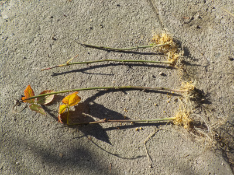
7月末に挿し木したブラックベリーです。
6本中4本成功しました。
もっと早く植替えしても良かったですが、冬の方が管理が楽かなと思って放置していました。
地植えにしたので、たぶん春になったら成長すると思います。
【ブラックベリーTOP】
【果物TOP】
【園芸TOP】
2021/07/31
今期のブラックベリーの収獲は今日でおしまい。
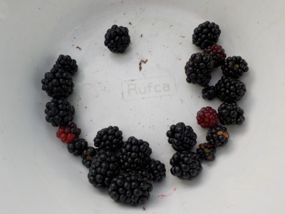
これだけしか収獲出来ませんでした。
去年の管理が悪かったせいで、今年は収穫が少なかったです。例年の今くらいだと冷凍庫にジャムのパックが5個くらいあるんですが、今年は0です。
今年はちゃんと管理して、秋に枝を増やそうと思います。
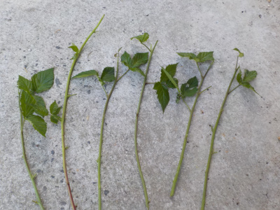
とりあえす6本挿し木しました。
挿し木の時期ではないですが、ブラックベリーは強いので根が出る気がします。
【ブラックベリーTOP】
【果物TOP】
【園芸TOP】
2021/07/13
今日もブラックベリーを冷凍しました。
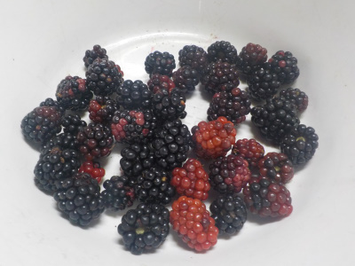
梅雨明けしてとっても暑い。
夕方に作業したんですが、暑くてどっと疲れました。
夜中にジャム作りをする元気はないので、冷凍庫にしまいました。
【ブラックベリーTOP】
【果物TOP】
【園芸TOP】
2021/07/10
今日のブラックベリーの収獲はちょっとでした。
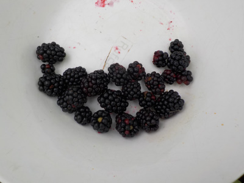
本日の収穫はちょっとだけでした。
近頃雨が多かったせいか、あまり実が熟れていませんでした。
ちょっとだけでジャムを作るのは効率が悪いので、冷凍庫で保存しました。
【ブラックベリーTOP】
【果物TOP】
【園芸TOP】
2021/07/03
ブラックベリーの実が沢山出来たので収穫しました。
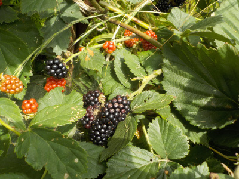
出来たものからドンドン収獲しないと、ドンドン腐っちゃいます。
美味しいんだから面倒なんて言わないで収穫します。
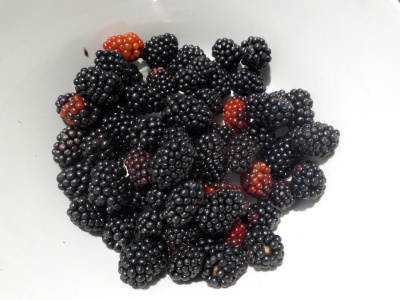
本日の収獲です。
タッパー1個分のジャムが出来そうです。
【ブラックベリーTOP】
【果物TOP】
【園芸TOP】
2021/06/20
ブラックベリーの収獲はパスだな。
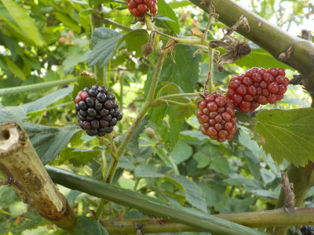
実が出来ているけど、まだ数が少ないので今日は収獲しない。
もう一週間くらいしたら収獲しよう。
【ブラックベリーTOP】
【果物TOP】
【園芸TOP】
2021/05/02
ブラックベリーのフェンスを作り直しました。
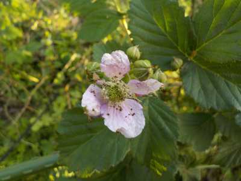
花が少し咲いていました。
フェンスを作って誘引するのは冬にやっておくべきことかもしれませんが、ブラックベリーはずーっと放置していました。
今日は枯れた枝をバサバサ切り捨てて、園芸用の支柱を組みなおししました。
今年は枝が少ないので、収獲も少なそうです。
【ブラックベリーTOP】
【果物TOP】
【園芸TOP】
過去の記事
2020/07/12
ブラックベリージャムを作りました。
2020/06/28
来週からはブラックベリーのスイーツ作りです。
2020/05/17
ブラックベリーにもカミキリがいた。
2019/07/13
ブラックベリーのジャムを作りました。
2019/06/02
ブラックベリーが沢山食べれそうです。
2018/07/21
ブラックベリーに毛虫大量発生中。
2018/07/01
ブラックベリーの収穫スタートです。
2018/03/11
ブラックベリーの柵を作りました。
2017/07/02
ブラックベリーを収穫しました。
2017/05/14
日当たりのいい場所のブラックベリーの花が咲きました。
【ブラックベリーTOP】
【果物TOP】
【園芸TOP】
2016/07/23
この頃毎週こんな感じです。
2016/07/03
ブラックベリーが採れ始めました。
2016/05/01
ブラックベリーに蕾が沢山付いています。
2016/01/31
ブラックベリーを誘引しました。
2015/07/11
ブラックベリーの収獲が始まりました。
【ブラックベリーTOP】 【果物TOP】 【園芸TOP】
2015/06/28
ブラックベリーを食べました。
2015/05/31
去年挿し木したブラックベリーに花が付きました。
2015/05/03
ブラックベリーの蕾が出来てます。
2015/03/15
ブラックベリーの芽が大きくなってきました。
2014/08/02
ブラックベリーために草抜きをしました。
【ブラックベリーTOP】 【果物TOP】 【園芸TOP】
2014/07/19
ブラックベリーの害虫。
2014/07/12
ブラックベリーを沢山収穫しました。
2014/07/06
ブラックベリーが黒くなってきました。
2014/06/15
挿し木のブラックベリーを地植えにしました。
2014/05/03
ブラックベリーの挿し木の結果
【ブラックベリーTOP】 【果物TOP】 【園芸TOP】
2014/04/06
ブラックベリーの挿し木から芽が出ました。
2014/02/16
ブラックベリーを挿してみました。
2013/08/10
ブラックベリーはそろそろ終わり。
2013/07/21
ブラックベリーを収穫しました。
2013/06/02
ブラックベリーの花が咲きました。
【ブラックベリーTOP】
【果物TOP】
【園芸TOP】
巨大化に注意しましょう。
【おいしいものを食べよう。】【たくさん寝よう。】
【ソロ活をしよう!】【季節感のあることをしよう。】【動画視聴はほどほどに。】【当サイトの全てのコンテンツは無断転載禁止です。】